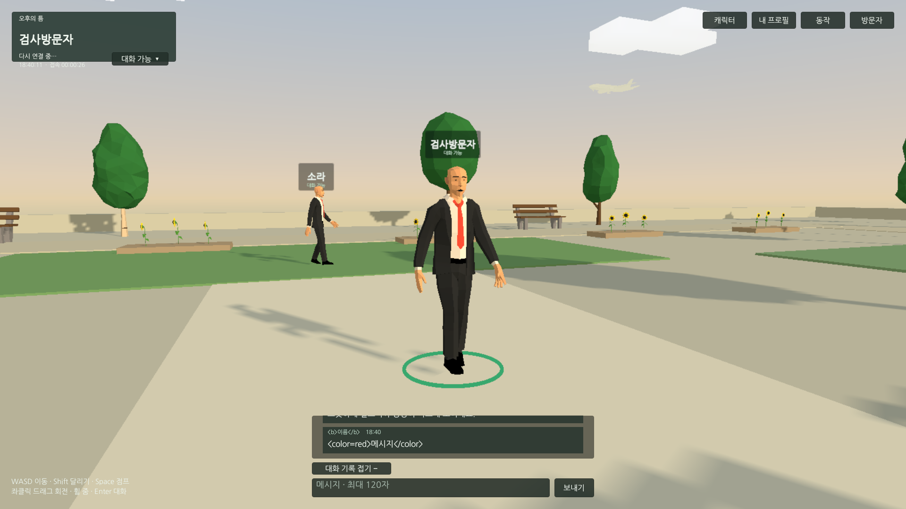
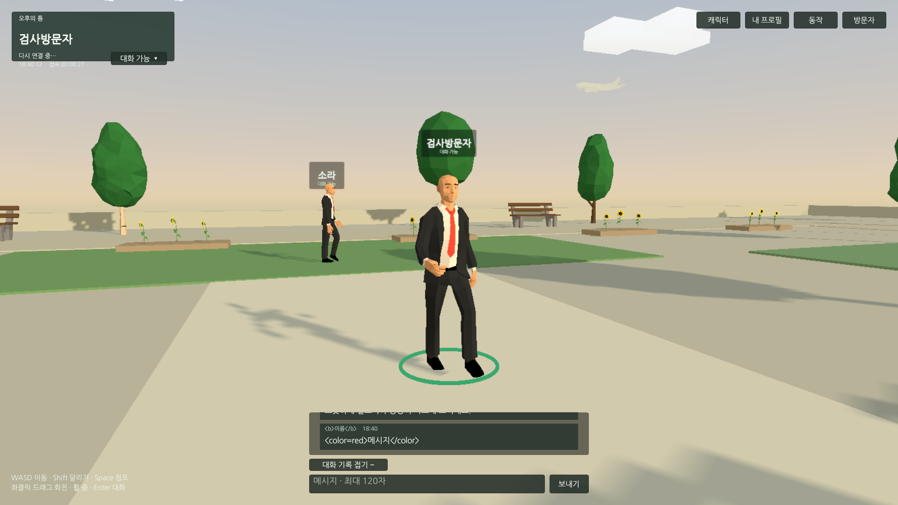
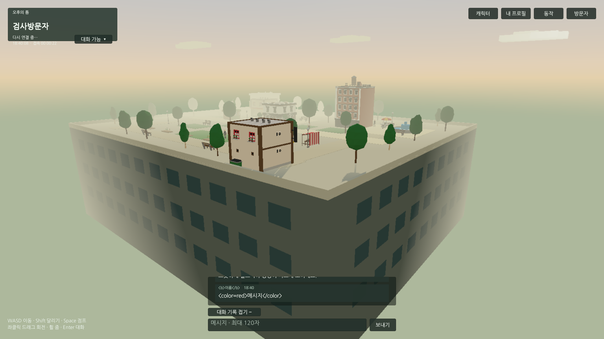
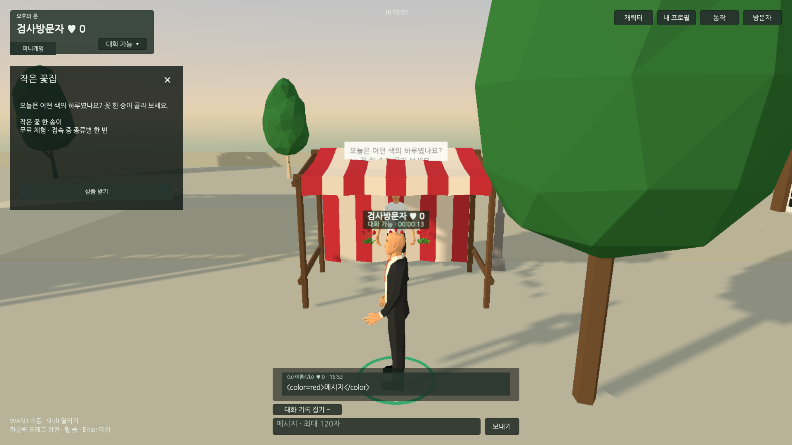
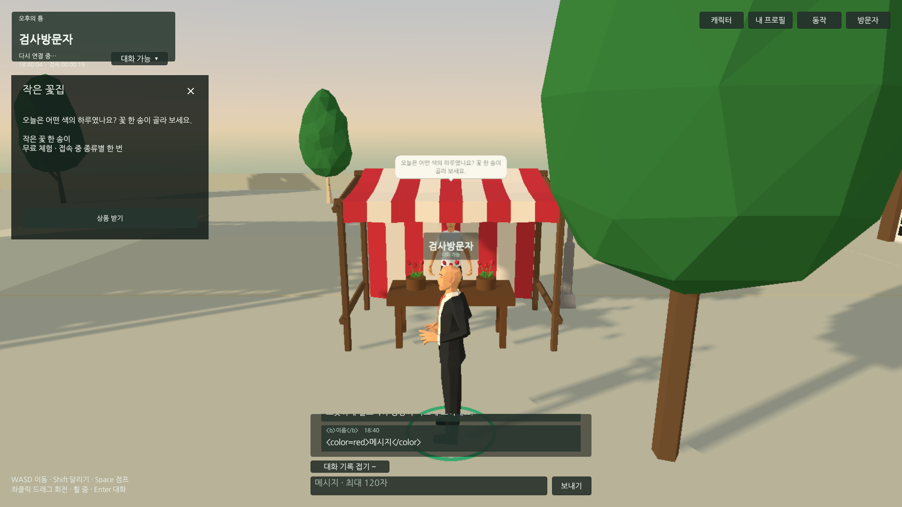
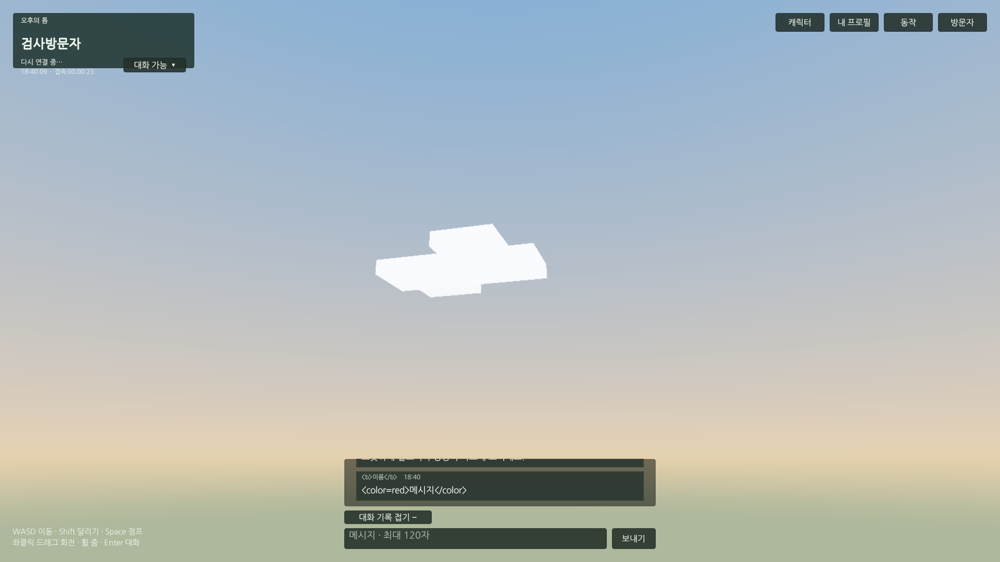
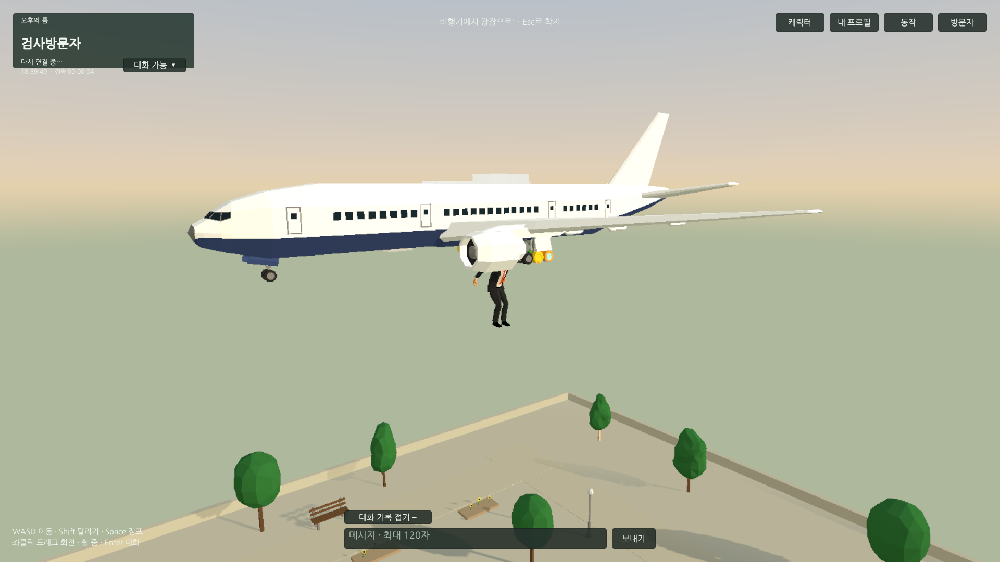
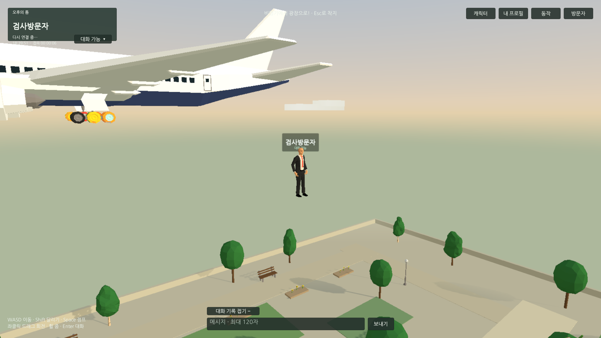

Tracefolio REPORTS & ISSUES
Tracefolio REPORTS & ISSUES블록 구름·프리팹·전용 캐릭터 리그·비행기 낙하 입장
완료옥상/HUD/꽃집 보완·미니게임 제거·점프·UI/NPC 프리팹·16종 리그 보정·4초 비행기 입장. Play161/웹17/서버11 통과.
작업 결과
요청 기능을 구현하고 최신 웹 빌드와 두 브라우저에서 검증했습니다. 플레이용 로컬 서버4190을 최신 산출물로 갱신했습니다. 공개 Pages 배포 성공과 개별 본문·이미지9개 해시·목록을 확인했고 전체 메뉴얼을 완료로 등록했습니다.
변경 내용
적용 내용
- 각진 구름6개: 공유 결합 메시60삼각형/개·공유 재질·충돌/그림자/Update 없음. BlockCloud 프리팹으로 배치합니다.
- 상인3종은 Characters/Vendors, 기능별 UI12개는 UI/Modules 프리팹으로 관리합니다. 씬 외부 참조는 오버라이드로 보존했습니다. 꽃집에 테이블·다리·화분을 추가하고 옥상 외벽을3cm 안쪽으로 분리했습니다.
- 시간은 프로필과 개인 좌상단에 표시합니다. 인기도는 닉네임 위 작게 표시하며0은 버튼/기록을 포함해 숨깁니다. 말풍선은 둥근 모서리·꼬리·짙은 글씨로 변경했습니다. 미니게임은 UI·클라이언트·서버에서 제거했습니다.
- Space 점프와 제공 Jump 클립을 연결했습니다. 증가 순번으로 짧은 점프를1Hz 표본 사이에도 원격 재생합니다.
- 제공 공용 Avatar와 모델 기준 자세를 비교해22개 뼈에서 최대24.21도 차이를 기록했습니다. 외형16종의 skeleton으로 전용 Avatar를 생성하고 CharacterDefinition.walkingClip에 제공 Locomotion 보행을 연결했습니다. 원본 에셋은 수정하지 않았습니다.
- 첫 입장은 비행기 통과→낙하→착지 약4초입니다. Esc·탭 숨김·비활성화에서 충돌/이동/TPS를 복원하며 재접속은 지상에서 시작합니다. 서버는 처음8초만24m 높이를 허용합니다.
같은 실제 게임 카메라에서 보행 설정 전후를 비교했습니다.
 
옥상 경계와 꽃집의 같은 카메라 전후입니다.
  
  
검증
- Unity6000.0.83f1 실제 Play 161개 통과. 입장·점프/착지·Esc/숨김 복원·16종 Avatar/보행·프로필/채팅/좌석·버튼 대상·누락 스크립트0·실행 오류0 및 개인 설정 복원 확인.
- Chrome/Edge 실제 웹 17개 통과. 원격 낙하/점프·Enter 채팅·프리팹 버튼·복귀를 확인했습니다. HTTP 서버11개 통과:1초 갱신/채팅·예약키 거부·좌석·신고·인기도/스폰서/이미지·점프/입장 높이 시간 제한·삭제한 게임 API404.
- AI0/6/12명 모두29.98FPS, 관리 메모리 약4.37/4.43/4.91MiB였습니다. Chrome 주 스레드 CPU/한 코어는 가시5초 15.49%, 숨김5초 0.03%였습니다. 이 측정은 짧은 로컬 시제품 측정이며 장시간/다기기 부하 결과는 아닙니다.
- 최종 빌드25,086,312bytes. 제공6개 파일 SHA256 일치, Runtime47개 소스 해시가 정리 전후 동일합니다. 임시 Editor4개 및 meta를 보관 후 제거했고 Runtime/Editor 재컴파일 통과, Unity 씬 저장 표시와 Console오류0을 확인했습니다. 전용 QA브라우저/서버/포트를 종료하고 프로필을 제거했으며 플레이 서버4190만 유지했습니다.
- 실제 원본 PNG를 편집 없이 사용했습니다. 가독성 보존을 위해 약216~369KB의1920×1080 원본을 유지했습니다. 교훈은 프로젝트 AGENTS에 리그 기준 대조·0숨김·낙하 복구로 반영했습니다. 공통 규칙과 중복되어 전역 지침 변경은 없습니다.
최종 제공 서버4190에서1920×1080 Chrome을 추가 측정했습니다. 고정 상인3명은 별도이며 다음 수는 배회 AI입니다.
| AI | FPS | 주 스레드 CPU/한 코어 | 관리 메모리MiB |
|---|---|---|---|
| 0 | 30.01 | 13.48% | 3.34 |
| 6 | 30.01 | 17.40% | 3.76 |
| 12 | 30.01 | 18.96% | 3.90 |
가시 스킨메시1/4/8개, 누적 경로 요청0/9/19회와3초 구간 증가0/0/1회를 기록했습니다. 프레임 분포 원문도 보존했습니다. 관리 메모리는 브라우저 전체 메모리와 다르며 GPU/전체 프로세스 메모리는 이번 추가 측정에 포함하지 않았습니다.
1차 공개 배포: https://github.com/MDJ0126/codex-config/actions/runs/41810034577 · 본문2개/이미지9개/목록 통과. 프로젝트 범위만 커밋·푸시했습니다. 최종 메뉴얼도 현재 버전 전체 QA 통과로 등록했습니다.
남은 사항
요청 범위 남은 작업 없음. 외부 인터넷 게임 호스팅·동접24명·장기간 내구성·모든 동작 전체 프레임 미술 검수는 별도 범위.
작업 시간
- 제안 시간: 최초25
40분, 프리팹 추가812분(전체3555분). 후속 리그/0숨김/낙하·재검증 추가2030분. - 실제로 완료된 시간: 제안 범위의 구현·실제 QA·정리와1차 공개 검증: 2026-11-04 17:42:47 KST → 2026-11-04 18:50:41 KST, 67분54초. 최종 기록 등록 2026-11-04 18:51:42 KST. 마지막 배포 확인 시각은 별도 공개 검증 JSON과 채팅 최종 보고에 기록합니다.
- XERJ: 미사용 — XERJ MCP/검색 스크립트 미제공. rg·현재 소스/에셋·실제 Unity/HTTP/브라우저 실행으로 대체했습니다.